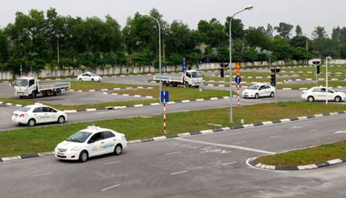

Giới thiệu
Trung tâm đào tạo lái xe Cơ giới Đường bộ NhanDV là đơn vị đi đầu trong lĩnh vực Tuyển sinh, đào tạo lái xe được sở GTVT TP HCM cấp phép đào tạo và tổ chức thi sát hạch. Hàng năm, trung tâm đào tạo trên 20.000 lượt học viên học lái xe các hạng từ B1, B2, C1.
Trung tâm đào tạo lái xe Cơ giới Đường bộ NhanDV là chuyên đào tạo lái xe chuyên nghiệp,THƯƠNG HIỆU ĐƯỢC TIN YÊU trong suốt nhiều năm liền. Cam Kết BIẾT LÁI NGAY sau buổi học đầu tiên; Cam kết HỌC PHÍ theo Quy Định Của Sở GTVT TPHCM. KHÔNG CÒN LO LẮNG bị mắc bẫy lừa đảo của các quảng cáo giá siêu rẻ.
*Ảnh sa trường tập lái xe
Các hạng bằng đào tạo
- Bằng lái Ô tô hạng B1.
- Bằng lái Ô tô hạng B2.
- Bằng lái Ô tô hạng C1.
Dịch vụ nhanh chóng, tiện lợi
Trung tâm hỗ trợ toàn bộ thủ tục hồ sơ cần thiết. Bạn chỉ cần mang chứng minh thư qua trung tâm để làm hồ sơ. Việc đặt lịch học cũng rất dễ dàng với Ứng dụng di động giúp bạn đặt lịch học mọi nơi.
Đảm bảo uy tín, chất lượng
Đảm bảo đã học là thi đậu 100%– Học viên tại trường sẽ được đào tạo bài bản, vững cả phần lý thuyết lẫn thực hành. Hỗ trợ chi phí thi lại lý thuyết và thực hành.
Tập lái thực hành với hình thức 1 thầy / 1 trò / 1 xe nhằm giúp cho học viên tiếp thu được kiến thức một cách dễ dàng, nhanh biết lái và lái vững tay. Được thiết kế chương trình học có GIỜ THỰC LÁI nhiều hơn đơn vị khác nên TỈ LỆ ĐẬU rất cao (top 2 tphcm theo Sở GTVT HCM).
Cơ sở hạ tầng đầy đủ
Với 12 sân tập và khu vực tập trải khắp địa bàn Hà Nội cùng trên 90 cán bộ giáo viên giảng dạy. Trung tâm tự tin đem đến sự thuận tiện và chất lượng đào tạo cao nhất trên từng học viên.
Trung tâm là đơn vị đi đầu Ứng dụng công nghệ cao từ việc học Lý thuyết trên Hệ thống Ứng dụng và mô hình thực tế ảo kết hợp đặt lịch học và đánh giá giáo viên trực tuyến sau mỗi buổi học giúp học viên có trải nghiệm học tốt nhất.
Hệ thống XE TẬP LÁI ĐỜI MỚI, MÁY LẠNH và các sân bãi, phòng học lý thuyết đạt chuẩn, hiện đại đứng hàng đầu tại TPHCM. Trong năm 2019, Trường dạy lái xe ô tô Tiến Thành đầu tư tăng cường, đẩy mạnh đầu tư thêm xe tập lái và tổ chức tập huấn cho giáo viên những phương pháp cải tiến nhất, có hiệu quả nhất; đồng thời bổ sung thêm các trang thiết bị giảng dạy hiện đại nhất.